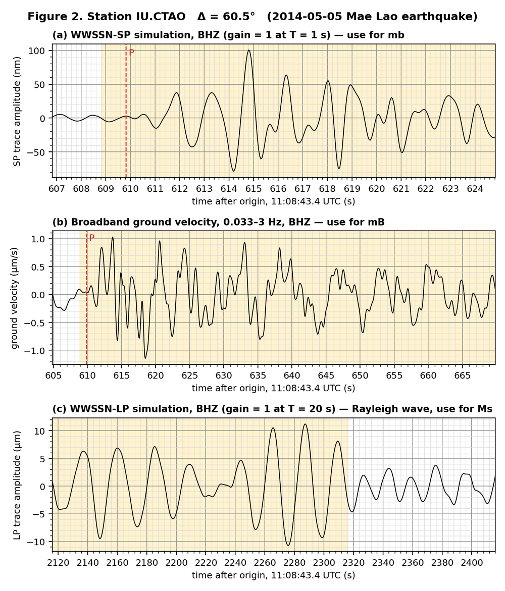
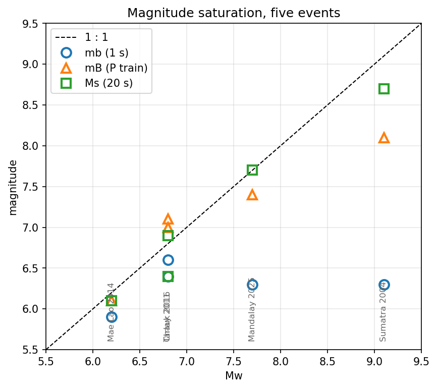
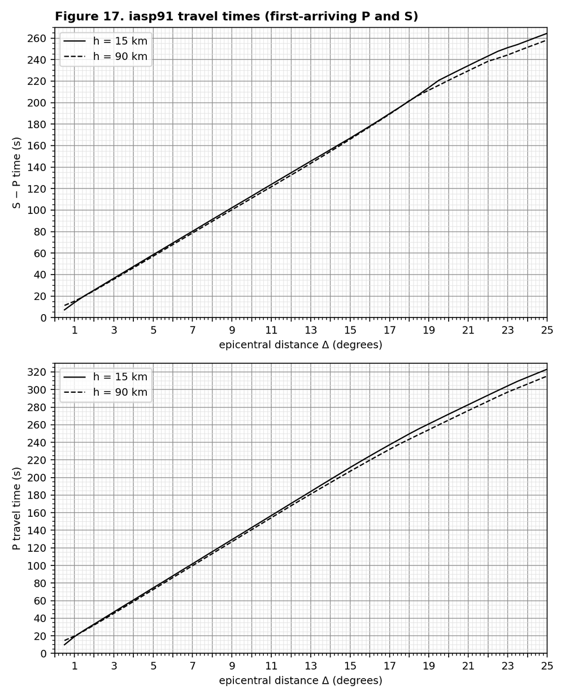
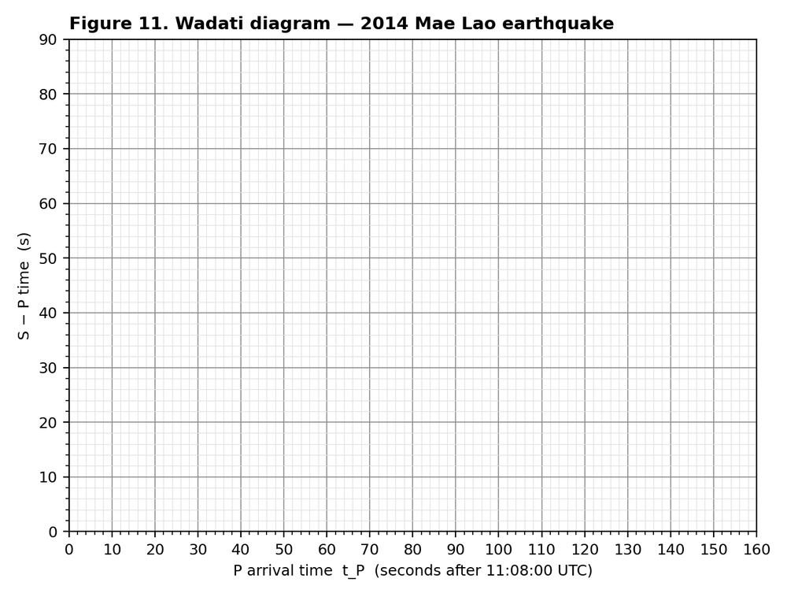
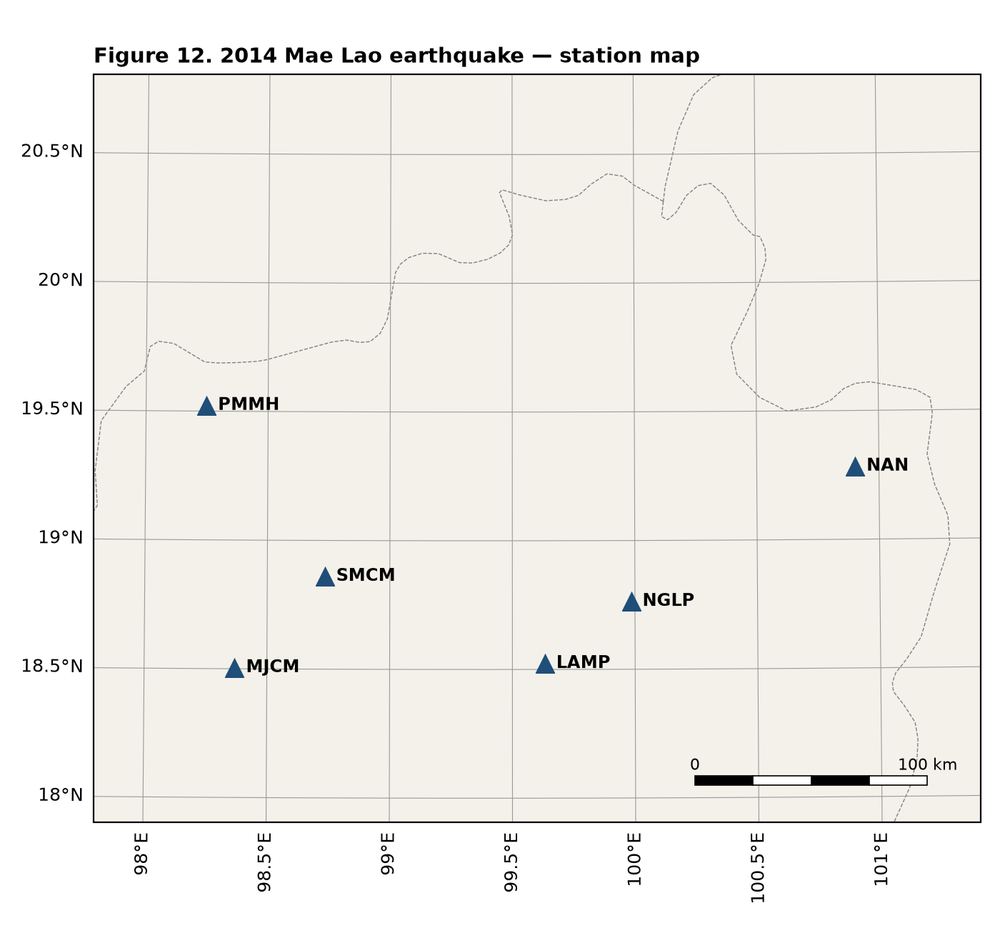

สัปดาห์ที่ 12 · SB1
ขนาดของแผ่นดินไหว และการหาตำแหน่ง
ML, mb, Ms, Mw ทำไมไม่เท่ากัน และหาจุดศูนย์กลางจากเวลาคลื่น จบบทด้วยแบบทดสอบและ Lab 1–3
1.1 แผ่นดินไหว 5 เหตุการณ์ที่กระทบไทย
ตลอดช่วงนี้เราใช้แผ่นดินไหวจริง 5 เหตุการณ์ บันทึกโดยสถานีไทย (กรมทรัพยากรธรณี DMR และกรมอุตุนิยมวิทยา TMD) และสถานีเชียงใหม่ IU.CHTO ของเครือข่ายโลก ทุกตัวเลขที่คุณคำนวณจะไปรวมใน EQ Fact Sheet ไฟล์เดียว
| เหตุการณ์ | วันเวลา (UTC) | จุดเหนือศูนย์ | ลึก | ระยะถึง CHTO | Mw (USGS) |
|---|---|---|---|---|---|
| แม่ลาว เชียงราย | 2014-05-05 11:08:43 | 19.66°N 99.67°E | 6–12 km | 1.09° (121 km) | 6.1 (GCMT 6.2) |
| ท่าขี้เหล็ก (Tarlay) เมียนมา | 2011-03-24 13:55:12 | 20.69°N 99.82°E | 8 km | 2.04° (227 km) | 6.79 |
| Chauk เมียนมา | 2016-08-24 10:34:55 | 20.92°N 94.57°E | 82 km | 4.62° (514 km) | 6.81 |
| มัณฑะเลย์ เมียนมา | 2025-03-28 06:20:53 | 22.01°N 95.94°E | 10 km | 4.25° (473 km) | 7.71 |
| สุมาตรา–อันดามัน | 2004-12-26 00:58:53 | 3.30°N 95.98°E | 30 km | 15.71° (1747 km) | 9.15 |
ระยะ Δ คิดจากจุดเหนือศูนย์ของ USGS ถึง CHTO (18.81°N 98.94°E) · 1° ≈ 111 km
1.2 Local magnitude (ML)
ML วัดจากแอมพลิจูดคลื่นสูงสุดบนเครื่องวัดแบบ Wood–Anderson ที่จำลองขึ้น ใช้กับแผ่นดินไหวใกล้ (ไม่เกิน ~1,000 km) มาตรฐาน IASPEI ใช้สูตรของ Hutton & Boore (1987)
ML = log₁₀A + 1.11 log₁₀R + 0.00189 R − 2.09
R = √(Δ² + h²)A คือแอมพลิจูดศูนย์ถึงยอด (nm) · R คือระยะถึงจุดกำเนิด (hypocentral distance, km) ไม่ใช่ระยะบนแผนที่ Δ เพราะคลื่นเดินทางจริงจากจุดกำเนิดที่อยู่ใต้ดิน
ตัวอย่าง · ML ที่สถานี VNLP (แผ่นดินไหวเล็กตะวันออกของเชียงราย 30 ม.ค. 2017)
Δ = 20.1 km · h = 19.2 km · A = 227.3 nm
1.3 mb, Ms และ Mw
| ชนิด | คลื่นที่วัด | สูตรในชั้นเรียน (A หน่วย µm) | ใช้ได้เมื่อ |
|---|---|---|---|
| mb | P แนวดิ่ง คาบ ~1 s | log A − log T + 0.01Δ + 5.9 | 20° < Δ < 160° |
| Ms | Rayleigh แนวราบ คาบ ~20 s | log A + 1.66 log Δ + 2.0 | 20° < Δ < 160° · ลึก < 50 km |
| Mw | seismic moment M₀ = μ·L·W·D | ⅔(log₁₀M₀ − 9.1) (N·m)⅔ log₁₀M₀ − 10.73 (dyne·cm) | ทุกระยะ ไม่อิ่มตัว |
มาตรฐาน IASPEI (2013) ใช้รูปแบบ mb = log(A/T) + Q(Δ,h) − 3.0 และ Ms = log(A/T) + 1.66 log Δ + 0.3 โดย A หน่วย nm ซึ่งอยู่ในแบบฝึกหัด Magnitude_Exercise ส่วนการ์ด Lab ใช้สูตรในชั้นเรียนข้างบน
ตัวอย่าง · Mw ของแม่ลาว 2014 จากหลายหน่วยงาน
Global CMT: M₀ = 2.42×10¹⁸ N·m · USGS W-phase: 1.50×10¹⁸ · DMR (regional): Mw 6.53
ตัวอย่าง · mb และ Ms ที่ CHTO (สุมาตรา 15 เม.ย. 2009 ตัวอย่างในชั้นเรียน)
Δ = 21.93° · คลื่น P: A = 11.29 µm, T = 7 s · Rayleigh: A = 57.11 µm

1.4 ทำไมขนาดไม่เท่ากัน และการหาตำแหน่ง
การอิ่มตัวของขนาด (magnitude saturation)
ขนาดแต่ละชนิดวัดแอมพลิจูดที่คาบหนึ่ง เมื่อรอยเลื่อนยาวกว่าที่คลื่นคาบนั้นจะรับรู้ได้ แอมพลิจูดจะไม่โตตามพลังงานจริง ขนาดจึงหยุดเพิ่ม: mb (1 s) หยุดก่อนที่ ~6–6.5 · ML ที่ ~6.5–7 · Ms (20 s) ที่ ~8 · Mw ไม่อิ่มตัว เพราะคำนวณจาก M₀

หาตำแหน่งจากเวลาคลื่น
- S − P → ระยะ: คลื่น S ช้ากว่า P ยิ่งไกลยิ่งห่าง · ใกล้ ๆ ใช้ d ≈ k(tS − tP) โดย k ≈ 8 km/s
- แผนภาพ Wadati: พล็อต tS − tP กับ tP ได้เส้นตรง ความชัน = Vp/Vs − 1 และจุดตัด tS − tP = 0 คือเวลาเกิด t₀
- วงกลม: R = Vp(tP − t₀) · Δ = √(R² − h²) วาดวงกลมรอบสถานี จุดตัดคือจุดเหนือศูนย์ ต้องมีอย่างน้อย 3 สถานี

ตัวอย่าง · Wadati ของแม่ลาว 2014 (16 สถานี DMR)
ความชันของเส้น tS − tP เทียบกับ tP = 0.753 · จุดตัดแกน = −32.82 s (นับจาก 11:08:00)

Lab 1 · ML ของแผ่นดินไหวเล็ก และ Mw ของแผ่นดินไหวแม่ลาว 2014
แท็บ Lab1 ของ EQ Fact Sheet ที่คำนวณ ML จากข้อมูลจริงของกรมทรัพยากรธรณี และ Mw ของแม่ลาวสองวิธี
- เวลา
- ประมาณ 40 นาที
- ส่งงาน
- ไฟล์ Fact Sheet ที่แท็บ Lab1 และแถว Mae Lao ครบ
- ต่อยอดจาก
- จุดเริ่มต้น · ใช้บทเรียนหัวข้อ 1.2–1.3
การ์ดขั้นตอน
ดาวน์โหลด EQ_FactSheet_KAED343.xlsx เปิดใน Google Sheets (File → Import → Upload) แล้วไปที่แท็บ Lab1_ML
ตาราง 6 แถว: สถานี VNLP (2 แถว) PAYA BHSP NGLP PHRA พร้อม Δ (km) A (nm) และ h = 19.2 km · คอลัมน์ R_km และ ML ยังว่าง
ไม่ได้ผล? ดูวิธีแก้
คำนวณระยะทางถึงจุดกำเนิด R = √(Δ² + h²) ในคอลัมน์ F (หัวข้อ 1.2)
Google Sheets · แท็บ Lab1_ML ช่อง F2วางในช่องนั้น กด Enter แล้วลากมุมขวาล่างของช่องลงจนสุดตาราง
=SQRT(C2^2+E2^2)VNLP 27.8 km · PAYA 45.3 · BHSP 52.1 · NGLP 79.7 · PHRA 117.6
ไม่ได้ผล? ดูวิธีแก้
คำนวณ ML ของแต่ละสถานี ด้วยสูตร Hutton & Boore (IASPEI)
Google Sheets · แท็บ Lab1_ML ช่อง G2วางในช่องนั้น กด Enter แล้วลากมุมขวาล่างของช่องลงจนสุดตาราง
=LOG10(D2)+1.11*LOG10(F2)+0.00189*F2-2.09VNLP HZ 1.92 · VNLP HN 2.12 · PAYA 0.97 · BHSP 1.06 · NGLP 2.10 · PHRA 1.99
ไม่ได้ผล? ดูวิธีแก้
หา ML ของเหตุการณ์ เป็นค่าเฉลี่ยและมัธยฐานของ 6 สถานี แล้วเทียบกับแค็ตตาล็อก DMR (ML 1.7)
Google Sheets · ช่อง G9 และ G10พิมพ์บรรทัดแรกใน G9 บรรทัดที่สองใน G10
=AVERAGE(G2:G7)
=MEDIAN(G2:G7)ค่าเฉลี่ย 1.69 ≈ 1.7 ตรงกับ DMR · มัธยฐาน 1.95 · PAYA กับ BHSP ต่ำกว่าสถานีอื่นราว 1 หน่วย
ไม่ได้ผล? ดูวิธีแก้
คำนวณ Mw ของแผ่นดินไหวแม่ลาว 2014 จาก seismic moment ของ Global CMT M₀ = 2.42 × 10¹⁸ N·m (หัวข้อ 1.3)
Google Sheets · ช่องว่างใดก็ได้พิมพ์แล้วกด Enter
=2/3*(LOG10(2.42E18)-9.1)6.19 → Mw 6.2 · ทั้งที่ DMR รายงาน ML 6.7 สำหรับเหตุการณ์เดียวกัน
ไม่ได้ผล? ดูวิธีแก้
ตรวจด้วยขนาดรอยเลื่อน: aftershock กระจายยาว L = 20 km ลึก W = 12 km สมมติ D = 0.35 m และ μ = 3.0 × 10¹⁰ Pa แล้วกรอกแถว Mae Lao ในแท็บ Summary
Google Sheets · ช่องว่างใดก็ได้แต่ละบรรทัดคนละช่อง
=3E10*20E3*12E3*0.35
=2/3*(LOG10(3E10*20E3*12E3*0.35)-9.1)M₀ 2.52E+18 N·m · Mw 6.20 สอดคล้องกับ GCMT · แถว Mae Lao ใน Summary มีช่อง My ML/mb/Ms = ML 6.7 (DMR) และหมายเหตุว่าทำไมต่างจาก Mw
ไม่ได้ผล? ดูวิธีแก้
Lab 2 · อ่าน seismogram ที่เชียงใหม่: mb, Ms และพลังงานของแผ่นดินไหวมัณฑะเลย์
แท็บ Lab2 ที่อ่านค่าจากคลื่นจริงด้วยตัวเอง และอธิบายได้ว่าทำไม mb, Ms, Mw ไม่เท่ากัน
- เวลา
- ประมาณ 45 นาที
- ส่งงาน
- รูป seismogram ที่ขีดยอด/ท้องที่ใช้ + แท็บ Lab2
- ต่อยอดจาก
- Lab 1 (ใช้ Fact Sheet เดิม)

การ์ดขั้นตอน
เปิดรูป seismogram ที่สถานีเชียงใหม่ (IU.CHTO) ของแผ่นดินไหวมัณฑะเลย์ 2025 ด้านบน ในแผง (a) หาเวลาที่คลื่น P และ S มาถึง แล้วกรอกแท็บ Lab2_CHTO
tP ≈ 65 s (ร่องรอยเริ่มขยับ) · tS ≈ 130 s (แอมพลิจูดเพิ่มชัดบน R) · S − P ≈ 65 s (±3 s)
ไม่ได้ผล? ดูวิธีแก้
ในแผง (b) หาช่วงแกว่งที่ใหญ่ที่สุดของคลื่น P อ่านยอดและท้องคลื่นที่ติดกัน แล้วคำนวณ A = ½(ยอด − ท้อง) และ T = 2 × (เวลาท้อง − เวลายอด)
ยอด +125 µm ที่ 83.3 s · ท้อง −445 µm ที่ 88.7 s → 2A ≈ 570 µm · A ≈ 285 µm · T ≈ 10.8 s (A ±10%, T ±0.5 s)
ไม่ได้ผล? ดูวิธีแก้
คำนวณ mb ด้วยสูตรในชั้นเรียน (Δ = 4.25°)
Google Sheets · ช่อง mbแทน 285 และ 10.8 ด้วยค่าที่คุณอ่านได้
=LOG10(285)-LOG10(10.8)+0.01*4.25+5.9mb ≈ 7.36 (±0.1)
ไม่ได้ผล? ดูวิธีแก้
ในแผง (c) อ่านแอมพลิจูดคลื่น Rayleigh (แนวราบ) แล้วคำนวณ Ms
Google Sheets · ช่อง Msแทน 17000 ด้วย A ที่คุณอ่านได้ (µm)
=LOG10(17000)+1.66*LOG10(4.25)+2ท้อง −17,000 µm ที่ ~158 s · ยอด +16,900 µm ที่ ~162 s → A ≈ 17,000 µm · Ms ≈ 7.27 (±0.1)
ไม่ได้ผล? ดูวิธีแก้
เทียบพลังงาน E = 10^(5.24 + 1.44M) จูล จาก Ms ของคุณ กับจาก Mw = 7.71 ของ USGS (หัวข้อ 1.5)
Google Sheets · ช่อง E from Ms / E from Mwแต่ละบรรทัดคนละช่อง
=10^(5.24+1.44*7.27)
=10^(5.24+1.44*7.71)E(Ms) = 5.18E+15 J (≈ 68 ลูกระเบิดฮิโรชิมา) · E(Mw) = 2.20E+16 J (≈ 290 ลูก) · ต่างกัน 4.3 เท่า จากขนาดต่างกันแค่ 0.44
ไม่ได้ผล? ดูวิธีแก้
คำนวณ Mw จาก M₀ = 4.63 × 10²⁰ N·m ด้วยสูตรในชั้นเรียน (หน่วย dyne·cm) แล้วสรุปลงแถว Mandalay ในแท็บ Summary
Google Sheets · ช่อง Mw from M01 N·m = 10⁷ dyne·cm
=2/3*LOG10(4.63E20*1E7)-10.73Mw = 7.71 · Summary แถว Mandalay: mb 7.36 / Ms 7.27 / Mw 7.7 พร้อมเหตุผลว่าทำไม mb สูงเกิน (Δ < 20°) และ Ms ต่ำไป (คาบ ~9 s ไม่ใช่ 20 s)
ไม่ได้ผล? ดูวิธีแก้
Lab 3 · หาจุดศูนย์กลางแผ่นดินไหวแม่ลาวด้วยแผนภาพ Wadati
แท็บ Lab3 และแผนที่ที่วาดวงกลม 6 วง ระบุตำแหน่งได้ห่างจาก USGS ไม่เกิน ~15 km
- เวลา
- ประมาณ 50 นาที
- ส่งงาน
- รูปถ่ายแผนที่ที่วาดวงกลม + แท็บ Lab3
- ต่อยอดจาก
- Lab 2

การ์ดขั้นตอน
ไปที่แท็บ Lab3_Wadati แปลงเวลาคลื่น P และ S ของ 16 สถานีเป็นวินาทีนับจาก 11:08:00 UTC
Google Sheets · ช่อง D2 และ E2บรรทัดแรกใน D2 บรรทัดที่สองใน E2 แล้วลากลงถึงแถว 17
=(TIMEVALUE(B2)-TIME(11,8,0))*86400
=(TIMEVALUE(C2)-TIMEVALUE(B2))*86400NGLP: D = 62.26 · E (tS − tP) = 15.07 · MUKA: 148.71 · 79.29
ไม่ได้ผล? ดูวิธีแก้
ทำแผนภาพ Wadati: แทรกกราฟ Scatter แกน x = D (tP) แกน y = E (tS − tP) แล้วหาความชันและจุดตัดแกน
Google Sheets · ช่อง G2 และ G3บรรทัดแรกใน G2 บรรทัดที่สองใน G3
=SLOPE(E2:E17,D2:D17)
=INTERCEPT(E2:E17,D2:D17)จุด 16 จุดเรียงเป็นเส้นตรง · slope = 0.753 → Vp/Vs = 1 + slope = 1.75 · intercept = -32.82
ไม่ได้ผล? ดูวิธีแก้
หาเวลาเกิด t₀ ที่เส้นตัด S − P = 0 แล้วเทียบกับ USGS (11:08:43.4)
Google Sheets · ช่อง G4พิมพ์แล้วกด Enter
=-G3/G2t₀ = 43.6 s → 11:08:43.6 UTC ห่างจาก USGS 0.2 s
ไม่ได้ผล? ดูวิธีแก้
คำนวณระยะจากสถานีถึงจุดเหนือศูนย์ (Δ) ของ 6 สถานีที่ใกล้ที่สุด: R = 6.2 × (tP − t₀) และ Δ = √(R² − 10²)
Google Sheets · ช่อง F2 (เฉพาะแถว NGLP LAMP SMCM NAN PMMH MJCM)วางในช่องนั้น กด Enter แล้วลากมุมขวาล่างของช่องลงจนสุดตาราง
=SQRT((6.2*(D2-$G$4))^2-10^2)NGLP 115.3 km · NAN 136.5 · SMCM 139.1 · LAMP 139.5 · PMMH 160.7 · MJCM 194.7
ไม่ได้ผล? ดูวิธีแก้
พิมพ์แผนที่สถานี (map_maelao_print.png) ตั้งวงเวียนตาม scale bar 100 km แล้ววาดวงกลมรัศมี Δ รอบ 6 สถานี
วงกลมตัดกันบริเวณ 19.76°N 99.70°E (±0.05°) ห่างจาก USGS (19.66°N 99.67°E) ราว 12 km
ไม่ได้ผล? ดูวิธีแก้
สรุปลงแท็บ Summary แถว Mae Lao: ตำแหน่งที่หาได้ และอธิบายว่าทิศใดเชื่อถือได้น้อยเพราะสถานีอยู่ด้านใต้ทั้งหมด (azimuthal gap ≈ 200°)
ช่อง My epicentre = 19.76°N 99.70°E · หมายเหตุว่าแนวเหนือ–ใต้คลาดได้มาก ต้องมีสถานีฝั่งเมียนมาหรือลาวช่วย
ไม่ได้ผล? ดูวิธีแก้
1.5 พลังงาน
E = 10^(5.24 + 1.44 Ms) จูลขนาดเพิ่ม 1 หน่วย = พลังงาน ×10^1.44 = 27.5 เท่า · ในชั้นเรียนเทียบ M6 = ระเบิดฮิโรชิมา 1 ลูก ดังนั้นแผ่นดินไหวขนาด M ≈ 27.5^(M − 6) ลูก
ตัวอย่าง · มัณฑะเลย์ 2025 จาก Ms ที่ CHTO และจาก Mw
Ms (อ่านที่ CHTO) = 7.27 · Mw (USGS) = 7.71
1.6 ตัวอย่างและแบบฝึกหัดเพิ่มเติม
ตัวอย่าง 3 ข้อนี้ใช้ตัวเลขสมมติ แสดงการคิดทีละขั้น แล้วฝึกต่อด้วยแบบฝึกหัด 12 ข้อท้ายหัวข้อ
ตัวอย่าง · Mw จากขนาดรอยเลื่อน (สมมติ)
รอยเลื่อนในภาคเหนือแตกยาว L = 40 km ลึกลงไป W = 15 km เลื่อนเฉลี่ย D = 1.0 m · μ = 3×10¹⁰ Pa
ตัวอย่าง · ML เท่ากัน แต่แอมพลิจูดต่างกันเท่าไร
แผ่นดินไหวเดียวกัน สถานีหนึ่งอยู่ที่ R = 50 km อีกสถานีที่ R = 200 km ถ้าทั้งสองให้ ML เท่ากัน แอมพลิจูดต่างกันกี่เท่า
ตัวอย่าง · Wadati 3 สถานี แล้วหาระยะ (สมมติ)
| สถานี | tP (s) | tS (s) | tS − tP (s) |
|---|---|---|---|
| A | 8.73 | 11.48 | 2.75 |
| B | 12.68 | 18.36 | 5.68 |
| C | 18.44 | 28.37 | 9.93 |
เวลานับจากนาทีเดียวกัน · Vp = 6.0 km/s · ลึก h = 10 km